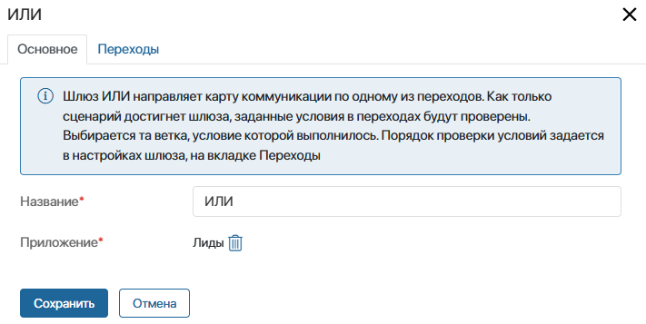
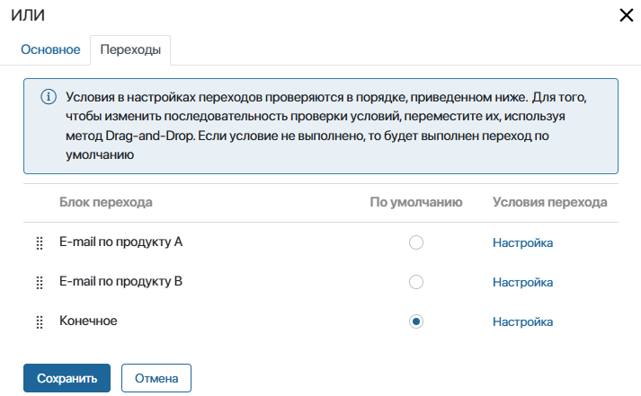
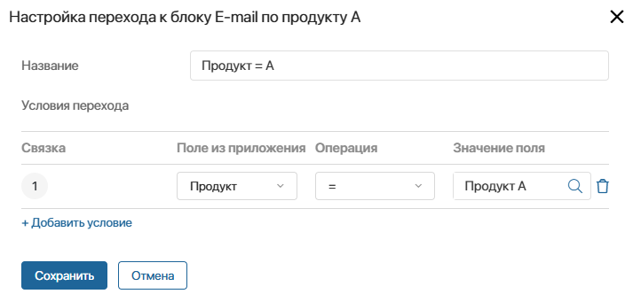
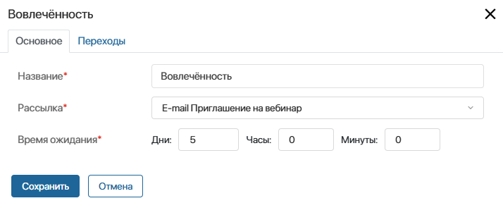
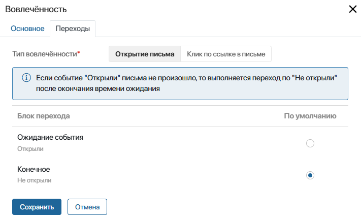
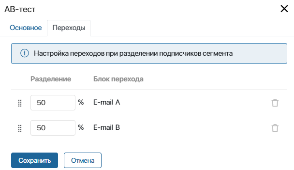

Шлюз позволяет разделить выполнение сценария карты коммуникаций на несколько веток для разных групп подписчиков в зависимости от заданных в нём условий. Вы можете добавить в сценарий шлюзы ИЛИ, Вовлечённость и АВ-тест.
Шлюз ИЛИ
Этот шлюз является исключающим и направляет выполнение сценария для подписчика только по одному исходящему переходу. Условия перехода можно задать по данным элемента приложения, в котором указан подписчик. Если условие выполнилось, сценарий продолжится по той ветке, для которой оно задано. Для шлюза ИЛИ можно настроить любое количество исходящих переходов.
Окно настроек шлюза состоит из двух вкладок: Основное и Переходы.
Шлюз ИЛИ. Вкладка «Основное»
Здесь укажите название шлюза в сценарии и укажите приложение, для которого вы будете задавать условия переходов. Можно выбрать приложение Контакты или приложение, заданное в первом триггере сценария. Если первым в сценарии является триггер Отсутствие активности контакта, указать можно только приложение Контакты.

Шлюз ИЛИ. Вкладка «Переходы»
На этой вкладке отобразится список всех исходящих переходов из шлюза ИЛИ, которые вы создали в сценарии. Задайте условия для каждого из них, а также выберите переход по умолчанию. Обратите внимание, условия проверяются в том порядке, в котором составлен список переходов. Чтобы изменить порядок проверки, переместите переходы в списке выше или ниже.
Обязательно укажите переход по умолчанию. По нему продолжится ход сценария, если ни одно из условий не выполнится.

Чтобы задать условия для выбранного перехода:
- Справа от названия перехода нажмите Настройка.
- В открывшемся окне укажите название перехода и добавьте условия, при соблюдении которых для подписчика сценарий продолжится по этому переходу.
Например, если в карточке лида задан Продукт А, то для подписчика, указанного в этом лиде, сценарий продолжится по переходу с названием Продукт = А и он получит письмо с акцией по продукту А. Подробнее о примере такого сценария смотрите в описании кейса Рассылка по продуктам.
Шлюз Вовлечённость
Этот шлюз можно разместить только после действия E-mail. Он позволяет настроить два исходящих перехода в зависимости от реакции подписчиков на письмо, полученное в результате выполнения блока E-mail. В настройках шлюза можно выбрать одну из следующих реакций:
- открыто или не открыто письмо;
- совершён переход по ссылке в письме или нет.
Например, если выбрана опция Открытие письма, шлюз разделит выполнение сценария на две ветви: для подписчиков, которые открыли письмо, и для тех, кто не открывал письмо.
Между E-mail и последующим шлюзом Вовлечённость вы можете размещать другие блоки.
Окно настроек шлюза состоит из двух вкладок: Основное и Переходы.
Шлюз Вовлечённость. Вкладка «Основное»
Здесь укажите название шлюза в сценарии, а также выберите действие E-mail, по которому будет учитываться реакция на письмо.
Также определите время ожидания реакции на полученное письмо. Если оно истечёт, выполнится переход по умолчанию, заданный на вкладке Переходы. При этом реакция на письмо не зафиксируется.

Шлюз Вовлечённость. Вкладка «Переходы»
Здесь выберите реакцию на письмо, которая будет учитываться в шлюзе: Открытие письма или Клик по ссылке в письме.
Ниже отобразятся два исходящих перехода, предварительно добавленные в сценарий. Обратите внимание, из шлюза Вовлечённость нужно создать два перехода.
Определите переход по умолчанию. Он выполнится, если подписчик не открыл письмо или не нажал на ссылку в письме. Например, это может быть переход к конечному событию. Если переход по умолчанию задан, появятся подсказки ниже названий переходов: Открыли и Не открыли или Кликнули по ссылке и Не кликнули по ссылке.

Рассмотрим пример работы шлюза. Настроим в нём два перехода для подписчиков, которые открыли письмо с приглашением на вебинар и не открыли. Зададим время ожидания пять дней. Если в течение этого срока письмо не будет открыто, сценарий завершится. Если подписчик откроет письмо, сценарий перейдёт к блоку Ожидание события и затем выполнится рассылка с напоминанием о вебинаре. Подробнее этот пример сценария смотрите в кейсе Приглашение на вебинар.
Шлюз АВ-тест
Шлюз позволяет разделить поток подписчиков случайным образом на несколько частей в заданном процентном соотношении и направить их по разным веткам сценария. Вы можете добавить в сценарий несколько шлюзов АВ-тест и в каждом из них настроить разделение потока подписчиков на 2-10 веток.
Например, вы хотите оценить два варианта маркетингового письма и узнать, письмо с какой темой подписчики будут открывать чаще. Для этого используйте шлюз АВ-тест, чтобы разделить всех подписчиков на две части. Каждая из них получит свой вариант письма. Затем проанализируйте результаты двух рассылок в отчёте Вовлечённость. Подробнее смотрите в описании кейса АВ-тест для email-рассылки.
Чтобы двум группам подписчиков отправить разные письма, после шлюза АВ-тест на каждой ветке сценария разместите блок E-mail для рассылки писем А и В. Затем выполните настройки шлюза:
- На вкладке Основное укажите название шлюза в сценарии.
- На вкладке Переходы задайте процентное соотношение для разделения потока подписчиков на части.
